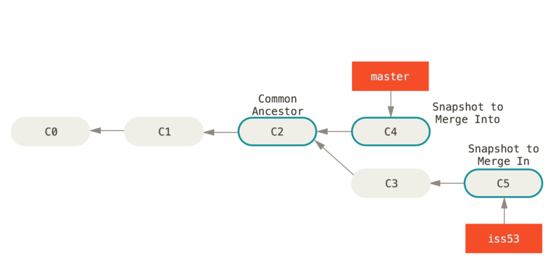
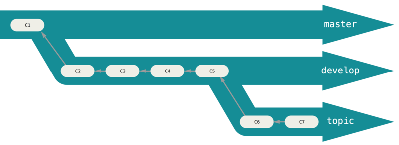
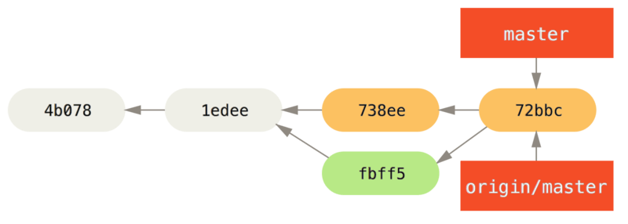

gitk - view change gitk doc


Created by BitKeeper for Linux
Golal:

pic 4: Хранение данных как набора изменений относительно первоначальной версии каждого из файлов.

pic 5: Хранение данных как снимков проекта во времени.

pic 6: Базовый подход в работе с Git
Базовый подход в работе с Git выглядит так:
========================================================================
В состав Git’а входит утилита git config, которая позволяет просматривать и настраивать параметры, контролирующие все аспекты работы Git’а, а также его внешний вид. Эти параметры могут быть сохранены в трёх местах:
/etc/gitconfig содержит значения, общие для всех пользователей системы и для всех их репозиториев. Если при запуске git config указать параметр --system, то параметры будут читаться и сохраняться именно в этот файл.Настройки на каждом следующем уровне подменяют настройки из предыдущих уровней, то есть значения в .git/config перекрывают соответствующие значения в /etc/gitconfig. В системах семейства Windows Git ищет файл .gitconfig в каталоге $HOME (C:\Users\$USER для большинства пользователей). Кроме того, Git ищет файл /etc/gitconfig, но уже относительно корневого каталога MSys, который находится там, куда вы решили установить Git, когда запускали инсталлятор.
git init - создаёт в текущей директории новую поддиректорию с именем .git
git add *.c - add *.c files to index отслеживать
git add -a or git add . or git add * - add all files
git commit -m 'initial project version' - save changes, create snpsh ot
git clone https://github.com/libgit2/libgit2 mylibgit - create folder mylibgit and subfolder .git download all data for this repository and create (checks out) work copy last version. "clone", not "checkout" забирается (pulled) каждая версия каждого файла из истории проекта вы можете потерять часть серверных перехватчиков (server-side hooks) и т.п., но не все данные
git push origin master

pic 7: write changes in repository
только взяли их из хранилища (checked them out)
git status
git add -a
git add -a - Это многофункциональная команда, она используется для добавления под версионный контроль новых файлов, для индексации изменений, а также для других целей, например для указания файлов с исправленным конфликтом слияния.
Если вы изменили файл после выполнения git add, вам придётся снова выполнить git add, чтобы проиндексировать последнюю версию файла:
git status -s or --short
Новые, неотслеживаемые файлы помечены ?? слева от них, файлы добавленные в отслеживаемые помечены A, отредактированные файлы помечены M и так далее. В выводе содержится два столбца - в левом указывается статус файла, а в правой модифицирован ли он после этого. К примеру в нашем выводе, файл README модифицирован в рабочей директории и не проиндексирован, файл lib/simplegit.rb модифицирован и проиндексирован. Файл Rakefile модифицирован, проиндексирован и ещё раз модифицирован, таким образом на данный момент у него есть изменения которые попадут в коммит и те которые не попадут.
sample
*.[oa]
*~
К шаблонам в файле .gitignore применяются следующие правила:
Glob-шаблоны представляют собой упрощённые регулярные выражения, используемые командными интерпретаторами. Символ () соответствует 0 или более символам; последовательность [abc] — любому символу из указанных в скобках (в данном примере a, b или c); знак вопроса (?) соответствует одному символу; и квадратные скобки, в которые заключены символы, разделённые дефисом ([0-9]), соответствуют любому символу из интервала (в данном случае от 0 до 9). Вы также можете использовать две звёздочки, чтобы указать на вложенные директории: a/*/z соответствует a/z, a/b/z, a/b/c/z, и так далее.
```
*.a
!lib.a
/TODO
build/
doc/*.txt
doc/*/.txt ```
git diff - что вы изменили, но ещё не проиндексировали, и git diff --staged что вы проиндексировали и собираетесь фиксировать (--staged и --cached синонимы). показывает вам непосредственно добавленные и удалённые строки — собственно заплатку (patch).
Чтобы увидеть, что же вы изменили, но пока не проиндексировали, наберите git diff без аргументов:Эта команда сравнивает содержимое вашего рабочего каталога с содержимым индекса. Результат показывает ещё не проиндексированные изменения.
Если вы хотите посмотреть, что вы проиндексировали и что войдёт в следующий коммит, вы можете выполнить git diff --staged or --cached. Эта команда сравнивает ваши индексированные изменения с последним коммитом:
git difftool --tool-help - просмотр внешних утилит сравнения таких программ как Araxis, emerge, vimdiff
git commit -v Запомните, что коммит сохраняет снимок состояния вашего индекса. Всё, что вы не проиндексировали, так и висит в рабочем каталоге как изменённое; вы можете сделать ещё один коммит
git commit -a - заставляет Git автоматически индексировать каждый уже отслеживаемый на момент коммита файл, позволяя вам обойтись без git add:
git rm - удаляет из индекса, также удаляет файл из вашего рабочего каталога, так что вы в следующий раз не увидите его как “неотслеживаемый”. Если вы просто удалите файл из своего рабочего каталога, он будет показан в секции Changes not staged for commit (измененные, но не проиндексированные) Затем, если вы выполните команду git rm, удаление файла попадёт в индекс:
После следующего коммита файл исчезнет и больше не будет отслеживаться. Если вы изменили файл и уже проиндексировали его, вы должны использовать принудительное удаление с помощью параметра -f. Это сделано для повышения безопасности, чтобы предотвратить ошибочное удаление данных, которые ещё не были записаны в снимок состояния и которые нельзя восстановить из Git.
Другая полезная штука, которую вы можете захотеть сделать — это удалить файл из индекса, оставив его при этом в рабочем каталоге. Другими словами, вы можете захотеть оставить файл на жёстком диске, и убрать его из-под бдительного ока Git. Это особенно полезно, если вы забыли добавить что-то в файл .gitignore и по ошибке проиндексировали, например, большой файл с логами, или кучу промежуточных файлов компиляции. Чтобы сделать это, используйте опцию --cached:
git rm --cached README
В команду git rm можно передавать файлы, каталоги или glob-шаблоны. Это означает, что вы можете вытворять что-то вроде:
git rm log/\*.log
Обратите внимание на обратный слэш () перед *. Он необходим из-за того, что Git использует свой собственный обработчик имён файлов вдобавок к обработчику вашего командного интерпретатора. Эта команда удаляет все файлы имеющие расширение .log находящиеся в директории log/. Или же вы можете сделать вот так:
git rm \*~ Эта команда удаляет все файлы, чьи имена заканчиваются на ~.
git mv file_from file_to - rename file
Однако, это эквивалентно выполнению следующих команд:
mv README.md README
git rm README.md
git add README
Единственное отличие состоит лишь в том, что mv — это одна команда вместо трёх — это функция для удобства
git log -p -2 - list commit for code review
git log --stat - short stat for every commit
git log --pretty=oneline - every commit in one line
short, full and fuller
command log option --pretty
git log --pretty=format:"%h - %an, %ar : %s"
Table 1. Полезные опции для git log --pretty=format
| option | disription out |
|---|---|
| %H | Хеш коммита |
| %h | Сокращенный хеш коммита |
| %T | Хеш дерева |
| %t | Сокращенный хеш дерева |
| %P | Хеш родителей |
| %p | Сокращенный хеш родителей |
| %an | Имя автора |
| %ae | Электронная почта автора |
| %ad | Дата автора (формат даты можно задать опцией --date=option) |
| %ar | Относительная дата автора |
| %cn | Имя коммитера |
| %ce | Электронная почта коммитера |
| %cd | Дата коммитера |
| %cr | Относительная дата коммитера |
| %s | Содержание |
Автор – это человек, изначально сделавший работу, а коммитер – это человек, который последним применил эту работу. Другими словами, если вы создадите патч для какого-то проекта, а один из основных членов команды этого проекта применит этот патч, вы оба получите статус участника – вы как автор и основной член команды как коммитер.
git log --pretty=format:"%h %s" --graph - показывает текущую ветку и историю слияний
Table 2. Наиболее распространенные опции для команды git log
| option | description |
|---|---|
| -p | Показывает патч для каждого коммита. |
| --stat | Показывает статистику измененных файлов для каждого коммита. |
| --shortstat | Отображает только строку с количеством изменений/вставок/удалений для команды --stat. |
| --name-only | Показывает список измененных файлов после информации о коммите. |
| --name-status | Показывает список файлов, которые добавлены/изменены/удалены. |
| --abbrev-commit | Показывает только несколько символов SHA-1 чек-суммы вместо всех 40. |
| --relative-date | Отображает дату в относительном формате (например, "2 weeks ago") вместо стандартного формата даты. |
| --graph | Отображает ASCII граф с ветвлениями и историей слияний. |
| --pretty | Показывает коммиты в альтернативном формате. Возможные варианты опций: oneline, short, full, fuller и format (с помощью последней опции вы можете указать свой формат). |
git log --since=2.weeks - покажет список коммитов, сделанных за последние две недели. Это команда работает с большим количеством форматов – вы можете указать определенную дату вида "2008-01-15" или же относительную дату, например "2 years 1 day 3 minutes ago" Также вы можете фильтровать список коммитов, которые удовлетворяют каким-то критериям. Опция --author дает возможность фильтровать по автору коммита, а опция --grep искать по ключевым словам в сообщении коммита. (Имейте ввиду, что если вы хотите фильтровать коммиты по автору и ключевым словам одновременно, вам нужно также добавить --all-match. В противном случае, команда отфильтрует вывод по одному из двух критериев.)
git log -Sfunction_name - принимает строку и показывает только те коммиты, в которых изменение в коде повлекло за собой добавление или удаление этой строки. Например, если вы хотите найти последний коммит, который добавил или удалил вызов определенной функции, вы можете запустить команду
Последней полезной опцией, которую принимает команда git log как фильтр, является путь. Если вы укажете директорию или имя файла, вы ограничите вывод только теми коммитами, в которых были изменения этих файлов. Эта опция всегда указывается последней после двойного тире (--), что отделяет указываемый путь от опций.
Table 3. Опции для ограничения вывода команды git log
| option | description |
|---|---|
| -(n) | Показывает только последние n коммитов. |
| --since, --after | Показывает только те коммиты, которые были сделаны после указанной даты. |
| --until, --before | Показывает только те коммиты, которые были сделаны до указанной даты. |
| --author | Показывает только те коммиты, в которых запись author совпадает с указанной строкой. |
| --committer | Показывает только те коммиты, в которых запись committer совпадает с указанной строкой. |
| --grep | Показывает только коммиты, сообщение которых содержит указанную строку. |
| -S | Показывает только коммиты, в которых изменение в коде повлекло за собой добавление или удаление указанной строки. |
Например, если вы хотите увидеть, в каких коммитах произошли изменения в тестовых файлах в истории исходного кода Git, автором которых был Junio Hamano и которые не были слияниями в октябре 2008 года, вы можете запустить следующую команду:
git log --pretty="%h - %s" --author=gitster --since="2008-10-01" \
--before="2008-11-01" --no-merges -- t/
Из почти 40,000 коммитов в истории исходного кода Git, эта команда показывает только 6, которые соответствуют этим критериям.
Отмена может потребоваться, если вы сделали коммит слишком рано, например, забыв добавить какие-то файлы или комментарий к коммиту. Если вы хотите переделать коммит, можно запустить commit с параметром --amend (дополнить):
git commit --amend
Например, если вы фиксируете изменения, и понимаете, что забыли проиндексировать изменения в файле, который хотели включить в коммит, можно сделать примерно так:
$ git commit -m 'initial commit'
$ git add forgotten_file
$ git commit --amend
области подготовки (staging area) и рабочего каталог.
Например, скажем, вы изменили два файла, и хотите закоммитить их двумя раздельными изменениями, но случайно набрали git add *, и добавили оба в индекс.
git reset HEAD CONTRIBUTING.md - отменим индексирование файла CONTRIBUTING.md
Хотя git reset может стать опасной командой, если ее вызвать с --hard, в приведенном примере файл в вашем рабочем каталоге не затрагивается. Вызов git reset без параметра не опасен — он затрагивает только область подготовки.
Что делать, если вы поняли, что не хотите сохранять свои изменения файла CONTRIBUTING.md? Как можно просто «разызменить» его — вернуть к тому виду, который был в последнем коммите
git checkout -- CONTRIBUTING.md
Важно понимать, что git checkout -- [file] — опасная команда. Любые изменения соответствующего файла пропадают — вы просто копируете поверх него другой файл. Ни в коем случае не используйте эту команду, если вы не убеждены, что файл вам не нужен.
Если вы хотите сохранить изменения файла, но пока отложить их в сторону, давайте пройдемся по тому, как прятать (stash) и создавать ветки (branch) в Ветвление в Git; эти способы обычно лучше.
Помните, все, что зафиксировано коммитом в Git, почти всегда можно восстановить. Можно восстановить даже коммиты, сделанные в удаленных ветках, или коммиты, замещенные параметром --amend (см. Восстановление данных). Но все, что вы потеряете, не сделав коммит, скорее всего, вам больше не увидеть.
Управление репозиториями включает в себя как умение добавлять новые, так и умение удалять устаревшие репозитории, а также умение управлять различными удалёнными ветками, объявлять их отслеживаемыми или нет и так далее.
$ git clone https://github.com/schacon/ticgit
$ cd ticgit
$ git remote
git remote -v - detailed view address for read and write
git remote add pb https://github.com/paulboone/ticgit
если вы хотите получить изменения, которые есть у Пола, но нету у вас, вы можете выполнить команду : git fetch pb Ветка master из репозитория Пола сейчас доступна вам под именем pb/master. Вы можете слить её с одной из ваших веток или переключить на неё локальную ветку, чтобы просмотреть содержимое ветки Пола
git fetch [remote-name]
Когда вы клонируете репозиторий, команда clone автоматически добавляет этот удалённый репозиторий под именем “origin”. Таким образом, git fetch origin извлекает все наработки, отправленные (push) на этот сервер после того, как вы склонировали его (или получили изменения с помощью fetch). Важно отметить, что команда git fetch забирает данные в ваш локальный репозиторий, но не сливает их с какими-либо вашими наработками и не модифицирует то, над чем вы работаете в данный момент. Вам необходимо вручную слить эти данные с вашими, когда вы будете готовы.
Если у вас есть ветка, настроенная на отслеживание удалённой ветки то, Выполнение git pull, как правило, извлекает (fetch) данные с сервера, с которого вы изначально склонировали, и автоматически пытается слить (merge) их с кодом, над которым вы в данный момент работаете.
Когда вы хотите поделиться своими наработками, вам необходимо отправить (push) их в главный репозиторий. git push [remote-name] [branch-name]
git push origin master - Эта команда срабатывает только в случае, если вы клонировали с сервера, на котором у вас есть права на запись, и если никто другой с тех пор не выполнял команду push. Иначе Вам придётся сначала вытянуть (pull) их изменения и объединить с вашими. Только после этого вам будет позволено выполнить push.
git remote show origin - Она выдаёт URL удалённого репозитория, а также информацию об отслеживаемых ветках.
$ git remote show origin
* remote origin
URL: https://github.com/my-org/complex-project
Fetch URL: https://github.com/my-org/complex-project
Push URL: https://github.com/my-org/complex-project
HEAD branch: master
Remote branches:
master tracked
dev-branch tracked
markdown-strip tracked
issue-43 new (next fetch will store in remotes/origin)
issue-45 new (next fetch will store in remotes/origin)
refs/remotes/origin/issue-11 stale (use 'git remote prune' to remove)
Local branches configured for 'git pull':
dev-branch merges with remote dev-branch
master merges with remote master
Local refs configured for 'git push':
dev-branch pushes to dev-branch (up to date)
markdown-strip pushes to markdown-strip (up to date)
master pushes to master (up to date)
Данная команда показывает какая именно локальная ветка будет отправлена на удалённый сервер по умолчанию при выполнении git push. Она также показывает, каких веток с удалённого сервера у вас ещё нет, какие ветки всё ещё есть у вас, но уже удалены на сервере. И для нескольких веток показано, какие удалённые ветки будут в них влиты при выполнении git pull.
git remote rename pb paul - это также меняет для вас имена удалённых веток. То, к чему вы обращались как pb/master, теперь стало paul/master.
git remote rm paul - удалить ссылку
возможность помечать (tag) определённые моменты в истории как важные. Как правило, эта функциональность используется для отметки моментов выпуска версий (v1.0, и т.п.)
git tag - Данная команда перечисляет метки в алфавитном порядке
Для меток вы также можете осуществлять поиск по шаблону. Например, репозиторий Git’а содержит более 500 меток. Если вас интересует просмотр только выпусков 1.8.5, вы можете выполнить следующее:
git tag -l 'v1.8.5*'
Git использует два основных типа меток: легковесные и аннотированные. Легковесная метка — это что-то весьма похожее на ветку, которая не меняется — это просто указатель на определённый коммит. В сущности, это контрольная сумма коммита, сохранённая в файл Для создания легковесной метки не передавайте опций -a, -s и -m
А вот аннотированные метки хранятся в базе данных Git’а как полноценные объекты. Они имеют контрольную сумму, содержат имя поставившего метку, e-mail и дату, имеют комментарий и могут быть подписаны и проверены с помощью GNU Privacy Guard (GPG). Обычно рекомендуется создавать аннотированные метки, чтобы иметь всю перечисленную информацию; но если вы хотите сделать временную метку или по какой-то причине не хотите сохранять остальную информацию, то для этого годятся и легковесные метки.
git tag -a v1.4 -m 'my version 1.4' - Создание аннотированной метки Опция -m задаёт сообщение метки, которое будет храниться вместе с меткой
Вы можете посмотреть данные метки вместе с коммитом, который был помечен, с помощью команды git show: git show v1.4
git tag v1.4-lw - На этот раз при выполнении git show на этой метке вы не увидите дополнительной информации. Команда просто покажет помеченный коммит: git show v1.4-lw
Также возможно помечать уже пройденные коммиты. Предположим, что история коммитов выглядит следующим образом:
$ git log --pretty=oneline
15027957951b64cf874c3557a0f3547bd83b3ff6 Merge branch 'experiment'
a6b4c97498bd301d84096da251c98a07c7723e65 beginning write support
0d52aaab4479697da7686c15f77a3d64d9165190 one more thing
6d52a271eda8725415634dd79daabbc4d9b6008e Merge branch 'experiment'
0b7434d86859cc7b8c3d5e1dddfed66ff742fcbc added a commit function
4682c3261057305bdd616e23b64b0857d832627b added a todo file
166ae0c4d3f420721acbb115cc33848dfcc2121a started write support
9fceb02d0ae598e95dc970b74767f19372d61af8 updated rakefile
964f16d36dfccde844893cac5b347e7b3d44abbc commit the todo
8a5cbc430f1a9c3d00faaeffd07798508422908a updated readme
Теперь предположим, что вы забыли отметить версию проекта v1.2, которая была там, где находится коммит “updated rakefile”. Вы можете добавить метку и позже. Для отметки коммита укажите его контрольную сумму (или её часть) в конце команды:
git tag -a v1.2 9fceb02
По умолчанию, команда git push не отправляет метки на удалённые серверы. Необходимо явно отправить (push) метки на общий сервер после того, как вы их создали. Это делается так же, как и добавление в репозиторий для совместного использования удалённых веток — нужно выполнить git push origin [имя метки].
git push origin v1.5
Если у вас есть много меток, которые хотелось бы отправить все за один раз, можно использовать опцию --tags для команды git push. В таком случае все ваши метки отправятся на удалённый сервер (если только их уже там нет).
git push origin --tags
В действительности вы не можете переходить на метки в Git, поскольку они не могут быть перемещены. Если вы хотите установить версию вашего репозитория в рабочую директорию, которая выглядит, как определенная метка, вы можете создать новую ветку с определенной меткой:
git checkout -b version2 v2.0.0
Конечно, если вы так делаете и коммитите, ваша ветка version2 будет немного отличаться от вашей метки v2.0.0, поскольку она будет двигаться вперед с новыми изменениями, так что будьте осторожны.
Если вы не хотите печатать каждую команду для Git’а целиком, вы легко можете настроить псевдонимы (alias) для любой команды с помощью git config. Вот несколько примеров псевдонимов, которые вы, возможно, захотите задать:
git config --global alias.co checkout
git config --global alias.br branch
git config --global alias.ci commit
git config --global alias.st status
Это означает, что, например, вместо ввода git commit, вам достаточно набрать только git ci.
Например, чтобы исправить неудобство, с которым мы столкнулись при исключении файла из индекса, можно добавить в Git свой собственный псевдоним unstage:
git config --global alias.unstage 'reset HEAD --'
Это делает эквивалентными следующие две команды:
git unstage fileA
git reset HEAD -- fileA
Такой вариант кажется немного более понятным. Также, обычно, добавляют команду last следующим образом:
git config --global alias.last 'log -1 HEAD'
Таким образом, можно легко просмотреть последний коммит:
``` git last commit 66938dae3329c7aebe598c2246a8e6af90d04646 Author: Josh Goebel dreamer3@example.com Date: Tue Aug 26 19:48:51 2008 +0800
test for current head
Signed-off-by: Scott Chacon <schacon@example.com>
```
Однако, возможно, вы захотите выполнить внешнюю команду, а не подкоманду Git’а. В этом случае, следует начать команду с символа !. Это полезно, если вы пишете свои утилиты для работы с Git-репозиторием. Продемонстрируем этот случай на примере создания псевдонима git visual для запуска gitk:
git config --global alias.visual "!gitk"
все базовые локальные операции с Git’ом: создавать или клонировать репозиторий, вносить изменения, индексировать и фиксировать эти изменения, а также просматривать историю всех изменений в репозитории
Когда вы делаете коммит, Git сохраняет его в виде объекта, который содержит указатель на снимок (snapshot) подготовленных данных. Этот объект так же содержит имя автора и email, сообщение и указатель на коммит или коммиты непосредственно предшествующие данному (его родителей): отсутствие родителя для первоначального коммита, один родитель для обычного коммита, и несколько родителей для результатов слияния веток.
Представьте себе каталог, который содержит дерево файлов, и вы подготавливаете их все вместе, а затем сохраняете в виде одного коммита. В процессе подготовки вычисляется контрольная сумма каждого файла (SHA-1 как мы узнали из Введение), хранящая версию файла в репозитории Git (Git ссылается на них), затем эти контрольные суммы добавляются в область подготовленных файлов:
git add README test.rb LICENSE
git commit -m 'initial commit of my project'
Когда вы создаете коммит командой git commit, Git вычисляет контрольные суммы каждого подкаталога (в нашем случае, только основной каталог проекта) и сохраняет эти объекты дерева в репозитории. Затем Git создает объект коммита с метаданными и указателем на основное дерево проекта для возможности воссоздать этот снимок (snapshot) в случае необходимости.

pic 9: Коммит и его дерево
Если вы сделаете изменения и еще один коммит, тогда следующий коммит сохранит указатель на коммит, предшествующий ему.

pic 10: Коммит и его родители
Ветка (branch) в Git — это легко перемещаемый указатель на один из этих коммитов. Имя основной ветки по умолчанию в Git — master.
Когда вы делаете коммиты, то получаете основную ветку, указывающую на ваш последний коммит. Каждый коммит автоматически двигает этот указатель вперед.

pic 11: Ветка и история коммитов
Что же на самом деле происходит, когда вы создаете ветку? Всего лишь создается новый указатель для дальнейшего перемещения.
git branch testing - В результате создается новый указатель на тот же самый коммит, в котором вы находитесь.

pic 12: Две ветки указывают на одну и ту же последовательность коммитов
Как Git определяет, в какой ветке вы находитесь? Он хранит специальный указатель HEAD. Имейте ввиду, что в Git концепция HEAD значительно отличается от других систем контроля версий, которые вы могли использовать раньше (Subversion или CVS). В Git это указатель на локальную ветку, в которой вы находитесь. В нашем случае мы все еще находимся в ветке “master”. Команда git branch только создает новую ветку. Переключения не происходит.

pic 13: HEAD указывает на ветку
Вы можете легко это увидеть при помощи простой команды git log. Она покажет вам, куда указывают указатели веток. Эта опция называется --decorate.
$ git log --oneline --decorate
f30ab (HEAD, master, testing) add feature #32 - ability to add new
34ac2 fixed bug #1328 - stack overflow under certain conditions
98ca9 initial commit of my project
Видны ветки “master” и “testing”, которые указывают на коммит f30ab.
git checkout testing - В результате указатель HEAD переместится на ветку testing.

pic 14: HEAD указывает на текущую ветку
git commit -a -m 'made a change'

pic 15: Указатель на ветку HEAD переместился вперед после коммита
Давайте переключимся назад на ветку “master”: git checkout master

pic 16: HEAD перемещается когда вы делаете checkout
Эта команда сделала две вещи. Она переместила указатель HEAD назад на ветку “master” и вернула файлы в рабочем каталоге в то состояние, которое было сохранено в снимке (snapshot), на который указывает ветка. Это также означает, что все изменения, вносимые с этого момента, будут отнесены к старой версии проекта. Другими словами, откатилась вся работа, выполненная в ветке “testing”, а вы можете продолжать в другом направлении.
Переключение веток меняет файлы в рабочем каталоге Важно запомнить, что когда вы переключаете ветки в Git, файлы в рабочем каталоге меняются. Если вы переключаетесь на старую ветку, то рабочий каталог будет выглядеть так же, как выглядел на момент последнего коммита в ту ветку. Если Git по каким-то причинам не может этого сделать — он не позволит вам переключиться.
git commit -a -m 'made other changes'
Теперь история вашего проекта разделилась (см Разветвленная история). Вы создали ветку, переключились в нее, поработали, а затем вернулись в основную ветку и поработали в ней. Эти изменения изолированы друг от друга: вы можете свободно переключаться туда и обратно, а когда будете готовы — слить их вместе. И все это делается простыми командами: branch, checkout и commit.

pic 17: Разветвленная история
Все это вы можете увидеть при помощи команды git log. Команда git log --oneline --decorate --graph --all выдаст историю ваших коммитов и покажет, где находятся указатели ваших веток, и как ветвилась история проекта.
Cоздание и удаление веток совершенно не затратно, так как ветка в Git — это всего лишь файл, содержащий 40 символов контрольной суммы SHA-1 того коммита, на который он указывает. Создание новой ветки совершенно быстро и просто — это всего лишь запись 41 байта в файл (40 знаков и перевод строки).
Это совершенно отличает Git от ветвления в большинстве более старых систем контроля версий, где все файлы проекта копируются в другой подкаталог. Там ветвление для проектов разного размера может занять от секунд до минут. В Git ветвление всегда мгновенное. Также, поскольку при коммите мы сохраняем указатель на родительский коммит, найти подходящую базу для слияния в основном очень просто, и это делается для нас автоматически
pic: work git branches
Давайте рассмотрим простой пример рабочего процесса, который может быть полезен в вашем проекте. Ваша работа построена так: 1. Вы работаете над сайтом. 2. Вы создаете ветку для новой статьи, которую вы пишете. 3. Вы работаете в этой ветке. В этот момент вы получаете сообщение, что обнаружена критическая ошибка, требующая скорейшего исправления. Ваши действия: 1. Переключиться на основную ветку. 2. Создать ветку для добавления исправления. 3. После тестирования слить ветку содержащую исправление с основной веткой. 4. Переключиться назад в ту ветку где вы пишите статью и продолжить работать.

pic 18: Простая история коммитов
Вы решаете, что теперь вы будете заниматься проблемой #53 из вашей системы отслеживания ошибок. Чтобы создать ветку и сразу переключиться на нее, можно выполнить команду git checkout с параметром -b: git checkout -b iss53
Это тоже самое что и:
git branch iss53
git checkout iss53

pic 19: Создание нового указателя ветки
Вы работаете над своим сайтом и делаете коммиты. Это приводит к тому, что ветка iss53 движется вперед, так как вы переключились на нее ранее (HEAD указывает на нее).
git commit -a -m 'added a new footer [issue 53]'

pic 20: Ветка iss53 двигается вперед
Тут вы получаете сообщение об обнаружении уязвимости на вашем сайте, которую нужно немедленно устранить. Благодаря Git, не требуется размещать это исправление вместе с тем, что вы сделали в iss53. Вам даже не придется прилагать усилий, чтобы откатить все эти изменения для начала работы над исправлением. Все, что вам нужно — переключиться на ветку master.
Но перед тем как сделать это — имейте в виду, что если ваш рабочий каталог либо область подготовленных файлов содержат изменения, не попавшие в коммит и конфликтующие с веткой, на которую вы хотите переключиться, то Git не позволит вам переключить ветки. Лучше всего переключаться из чистого рабочего состояния проекта. Есть способы обойти это (спрятать (stash) или исправить (amend) коммиты), но об этом мы поговорим позже в главе Прибережение и очистка. Теперь предположим, что вы зафиксировали все свои изменения и можете переключиться на основную ветку: git checkout master
Важно запомнить: когда вы переключаете ветки, Git возвращает состояние рабочего каталога к тому виду, какой он имел в момент последнего коммита в эту ветку. Он добавляет, удаляет и изменяет файлы автоматически, чтобы состояние рабочего каталога соответствовало тому, когда был сделан последний коммит.
Теперь вы можете перейти к написанию исправления. Давайте создадим новую ветку для исправления, в которой будем работать, пока не закончим исправление.
$ git checkout -b hotfix
Switched to a new branch 'hotfix'
$ vim index.html
$ git commit -a -m 'fixed the broken email address'
[hotfix 1fb7853] fixed the broken email address
1 file changed, 2 insertions(+)

pic 21: Ветка hotfix основана на ветке master
Вы можете прогнать тесты, чтобы убедиться, что ваше исправление делает именно то, что нужно. И если это так — выполнить слияние (merge) с основной веткой для включения в продукт. Это делается командой git merge:
$ git checkout master
$ git merge hotfix
Updating f42c576..3a0874c
Fast-forward
index.html | 2 ++
1 file changed, 2 insertions(+)
Заметили фразу “fast-forward” в этом слиянии? Из-за того, что коммит, на который указывала ветка, которую вы слили, был прямым потомком того коммита, на котором вы находились, Git просто переместил указатель ветки вперед. Другими словами, если коммит сливается с тем, до которого можно добраться, двигаясь по истории прямо, Git упрощает слияние, просто перенося указатель метки вперед (так как нет разветвления в работе). Это называется fast-forward (перемотка). Теперь ваши изменения — в снимке (snapshot) коммита, на который указывает ветка master, и исправления продукта можно внедрять.

pic 22: master перемотан до hotfix
После внедрения вашего архиважного исправления вы готовы вернуться к работе над тем, что были вынуждены отложить. Но сначала нужно удалить ветку hotfix, потому что она больше не нужна — ветка master указывает на то же самое место. Для удаления ветки выполните команду git branch с параметром -d: git branch -d hotfix
Теперь вы можете переключить ветку и вернуться к работе над своей проблемой #53:
$ git checkout iss53
Switched to branch "iss53"
$ vim index.html
$ git commit -a -m 'finished the new footer [issue 53]'
[iss53 ad82d7a] finished the new footer [issue 53]
1 file changed, 1 insertion(+)

pic 23: Продолжение работы над iss53
Стоит обратить внимание на то, что все изменения из ветки hotfix не включены в вашу ветку iss53. Если их нужно включить, вы можете влить ветку master в вашу ветку iss53 командой git merge master, или же вы можете отложить слияние этих изменений до завершения работы, и затем влить ветку iss53 в master.
Предположим, вы решили, что работа по проблеме #53 закончена, и ее можно влить в ветку master. Для этого нужно выполнить слияние ветки iss53 точно так же, как вы делали это с веткой hotfix ранее. Все что нужно сделать — переключиться на ветку, в которую вы хотите включить изменения, и выполнить команду git merge:
$ git checkout master
Switched to branch 'master'
$ git merge iss53
Merge made by the 'recursive' strategy.
index.html | 1 +
1 file changed, 1 insertion(+)
Результат этой операции отличается от результата слияния ветки hotfix. В данном случае процесс разработки ответвился в более ранней точке. Так как коммит, на котором мы находимся, не является прямым потомком ветки, с которой мы выполняем слияние, Git придется немного потрудиться. В этом случае Git выполняет простое трехстороннее слияние двух снимков (snapshot) сливаемых веток и общего для двух веток родительского снимка.

pic 24: Использование трех снимков при слиянии
Вместо того, чтобы просто передвинуть указатель ветки вперед, Git создает новый снимок-результат трехстороннего слияния, а затем автоматически делает коммит. Этот особый коммит называют коммитом слияния, так как у него более одного предка.

pic 25: Коммит слияния
Стоит отметить, что Git сам определяет наилучшего общего предка, подходящего как база для слияния; это отличает его от более старых инструментов, таких как CVS или Subversion (до версии 1.5), где разработчикам, выполнявшим слияние, приходилось самим находить лучшую базу.
Теперь, когда работа влита, ветка iss53 больше не нужна. Вы можете закрыть вопрос в системе отслеживания ошибок и удалить ветку: git branch -d iss53
$ git merge iss53
Auto-merging index.html
CONFLICT (content): Merge conflict in index.html
Automatic merge failed; fix conflicts and then commit the result.
Git не создал коммит слияния автоматически. Он остановил процесс до тех пор, пока вы не разрешите конфликт. Чтобы в любой момент после появления конфликта увидеть, какие файлы не объединены, вы можете запустить git status: Все, где есть неразрешенные конфликты слияния, перечисляется как неслитое.
Все, где есть неразрешенные конфликты слияния, перечисляется как неслитое. Git добавляет в конфликтующие файлы стандартные пометки разрешения конфликтов, чтобы вы могли вручную открыть их и разрешить конфликты. В вашем файле появился раздел, выглядящий примерно так:
``` <<<<<<< HEAD:index.html
=======iss53:index.html ```
В этом разрешении есть немного от каждой части, а строки <<<<<<<, ======= и >>>>>>> совсем убраны. Разрешив каждый конфликт во всех файлах, запустите git add для каждого файла, чтобы отметить конфликт как решенный. Подготовка (staging) файла помечает его для Git как разрешенный конфликт.
Если вы хотите использовать графический инструмент для разрешения конфликтов, можно запустить git mergetool, что откроет соответствующее визуальное средство, которое проведет вас по всем конфликтам: git mergetool
После выхода из средства слияния Git спрашивает, успешно ли слияние. Если вы утвердительно ответите скрипту, он подготовит (stage) файл, чтобы отметить его как разрешенный. Теперь можно снова запустить git status, чтобы убедиться, что все конфликты разрешены
Если это вас устраивает, и вы убедились, что все, где были конфликты, подготовлено (staged), можете ввести git commit, чтобы завершить коммит слияния.
git branch - вы получите простой список имеющихся у вас веток, а символ *, стоящий перед веткой master: он указывает на ветку, на которой вы находитесь в настоящий момент (т.е. ветку, на которую указывает HEAD).
Чтобы посмотреть последний коммит на каждой из веток, выполните команду git branch -v
Чтобы посмотреть те ветки, которые вы уже слили с текущей, можете выполнить команду git branch --merged: Те ветки из этого списка, перед которыми нет символа *, можно смело удалять командой git branch -d; наработки из этих веток уже включены в другую ветку, так что ничего не потеряется.
Чтобы увидеть все ветки, содержащие наработки, которые вы пока ещё не слили в текущую ветку, выполните команду git branch --no-merged: Так как ветка содержит ещё не слитые наработки, попытка удалить её командой git branch -d приведет к ошибке: Если вы действительно хотите удалить ветку и потерять наработки, вы можете сделать это при помощи опции -D
Так как в Git применяется простое трехэтапное слияние, ничто не мешает многократно объединять ветки в течении длительного времени. То есть у вас может быть несколько постоянно открытых веток, применяемых для разных этапов цикла разработки. Содержимое некоторых из них будет регулярно сливаться в другие ветки. Многие разработчики, использующие Git, придерживаются именно такого подхода, оставляя полностью стабильный код только в ветке master. При этом существует и параллельная ветка с именем develop или next, служащая для работы и тестирования стабильности. После достижения стабильного результата ее содержимое сливается в ветку master. Она используется для объединения завершенных задач из тематических веток (временных веток наподобие iss53), чтобы гарантировать, что эти задачи проходят тестирование и не вносят ошибок. По сути, мы рассматриваем указатели, перемещающиеся по линии фиксируемых нами изменений. Стабильные ветки находятся в нижнем конце истории коммитов, а самые свежие наработки — ближе к ее верхней части

pic 26: Линейное представление повышения стабильности веток
В общем случае можно представить набор рабочих накопителей, в котором наборы коммитов перемещаются на более стабильный уровень только после полного тестирования

pic 27: Представление диаграммы стабильности веток в виде многоуровневого накопителя
Число уровней стабильности можно увеличить. В крупных проектах зачастую появляется ветка proposed или pu (proposed updates), объединяющая ветки с содержимым, которое невозможно включить в ветку next или master. Фактически каждая ветка представляет собственный уровень стабильности. Как только он повышается, содержимое сливается в ветку, расположенную выше. Разумеется, можно и вообще обойтись без долгоживущих веток, но зачастую они имеют смысл, особенно при работе над большими и сложными проектами.
А вот такая вещь, как тематические ветки, полезна вне зависимости от величины проекта. Тематической (topic branch) называется временная ветка, создаваемая и используемая для работы над конкретной функциональной возможностью или решения сопутствующих задач.
Пример тематических веток вы видели в предыдущем разделе, когда мы создавали ветки iss53 и hotfix. Для каждой из них было выполнено несколько коммитов, после чего сразу же после слияния с основной веткой они были удалены. Такая техника позволяет быстро и радикально осуществлять переключения контекста. Работа разделена по уровням, и все изменения в конкретной ветке относятся к определенной теме, а значит, во время просмотра кода проще понять, что и где было сделано. Ветку с внесенными в нее изменениями можно хранить минуты, дни или даже месяцы, и выполнять ее слияние, только когда это действительно требуется, независимо от порядка создания веток в рамках проекта и порядка работы с ними. Предположим, мы работаем в ветке master, ответвляемся для решения попутной проблемы (iss91), некоторое время занимаемся ею, затем создаем ветку, чтобы попробовать решить эту задачу другим способом (iss91v2), возвращаемся в ветку master, выполняем там некие действия и создаем новую ветку для действий, в результате которых не уверены (ветка dumbidea). Результирующая история коммитов будет выглядеть примерно так:

pic 28: Набор тематических веток
Предположим, вам больше нравится второй вариант решения задачи (iss91v2), а ветку dumbidea вы показали коллегам, и оказалось, что там содержится гениальная идея. Фактически вы можете удалить ветку iss91 (потеряв коммиты C5 и C6) и слить две другие ветки. После этого история будет выглядеть так:

pic 29: История после слияния веток dumbidea и iss91v2
Удалённые ветки — это ссылки (pointers) на состояние веток в ваших удалённых репозиториях. Это локальные ветки, которые нельзя перемещать; они двигаются автоматически всякий раз, когда вы осуществляете связь по сети. Удалённые ветки действуют как закладки для напоминания о том, где ветки в удалённых репозиториях находились во время последнего подключения к ним.
Они выглядят как (имя удал. репоз.)/(ветка). Например, если вы хотите посмотреть, как выглядела ветка master на сервере origin во время последнего соединения с ним, проверьте ветку origin/master. Если вы с партнёром работали над одной проблемой, и он выложил ветку iss53, у вас может быть своя локальная ветка iss53; но та ветка на сервере будет указывать на коммит в origin/iss53.
Если вы запустите git clone -o booyah, так вы будете иметь booyah/master как вашу удаленную ветку по умолчанию.
 pic 30: Серверный и локальный репозитории после клонирования
pic 30: Серверный и локальный репозитории после клонирования
Если вы сделаете что-то в своей локальной ветке master, а тем временем кто-то ещё отправит (push) изменения на git.ourcompany.com и обновит там ветку master, то ваши истории продолжатся по-разному. Ещё, до тех пор, пока вы не свяжетесь с сервером origin, ваш указатель origin/master не будет сдвигаться.

pic 31: Локальная и удаленная работа может расходиться
Для синхронизации вашей работы выполняется команда git fetch origin. Эта команда ищет, какому серверу соответствует “origin” (в нашем случае это git.ourcompany.com); извлекает оттуда все данные, которых у вас ещё нет, и обновляет ваше локальное хранилище данных; сдвигает указатель origin/master на новую позицию.

pic 32: git fetch обновляет ваши удаленные ссылки
Чтобы продемонстрировать то, как будут выглядеть удалённые ветки в ситуации с несколькими удалёнными серверами, предположим, что у вас есть ещё один внутренний Git-сервер, который используется для разработки только одной из ваших команд разработчиков. Этот сервер находится на git.team1.ourcompany.com. Вы можете добавить его в качестве новой удалённой ссылки на проект, над которым вы сейчас работаете с помощью команды git remote add так же, как было описано в Основы Git. Дайте этому удалённому серверу имя teamone, которое будет сокращением для полного URL.

pic 33: Добавление еще одного сервера в качестве удаленной ветки
Теперь можете выполнить git fetch teamone, чтобы извлечь всё, что есть на сервере и нет у вас. Так как в данный момент на этом сервере есть только часть данных, которые есть на сервере origin, Git не получает никаких данных, но выставляет удалённую ветку с именем teamone/master, которая указывает на тот же коммит, что и ветка master на сервере teamone.

pic 34: Удаленное отслеживание ветки teamone/master
Таким образом, вы можете использовать свои личные ветки для работы, которую вы не хотите показывать, и отправлять только те тематические ветки, над которыми вы хотите работать с кем-то совместно.
Если у вас есть ветка serverfix, над которой вы хотите работать с кем-то ещё, вы можете отправить её точно так же, как вы отправляли вашу первую ветку. Выполните git push (удал. сервер) (ветка): git push origin serverfix
Это в некотором роде сокращение. Git автоматически разворачивает имя ветки serverfix до refs/heads/serverfix:refs/heads/serverfix, что означает “возьми мою локальную ветку serverfix и обнови ей удалённую ветку serverfix.” Мы подробно обсудим часть с refs/heads/ в Git изнутри, но обычно её можно опустить. Вы также можете выполнить git push origin serverfix:serverfix — произойдёт то же самое — здесь говорится “возьми мой serverfix и сделай его удалённым serverfix.” Можно использовать этот формат для отправки локальной ветки в удалённую ветку с другим именем. Если вы не хотите, чтобы ветка называлась serverfix на удалённом сервере, то вместо предыдущей команды выполните git push origin serverfix:awesomebranch. Так ваша локальная ветка serverfix отправится в ветку awesomebranch удалённого проекта.
Если вы не хотите каждый раз вводить ваши данные, когда вы отправляете изменения, вы можете установить “кэш учетных данных”. Проще всего просто держать их в памяти несколько минут, вы можете легко настроить с помощью команды git config --global credential.helper cache.
В следующий раз, когда один из ваших соавторов будет получать обновления с сервера, он получит ссылку на то, на что указывает serverfix на сервере, как удалённую ветку origin/serverfix: git fetch origin
Важно отметить, что когда при получении данных у вас появляются новые удалённые ветки, вы не получаете автоматически для них локальных редактируемых копий. Другими словами, в нашем случае вы не получите новую ветку serverfix — только указатель origin/serverfix, который вы не можете менять.
Чтобы слить эти наработки в свою текущую рабочую ветку, выполните git merge origin/serverfix. Если вам нужна своя собственная ветка serverfix, над которой вы сможете работать, то вы можете создать её на основе удалённой ветки: git checkout -b serverfix origin/serverfix Это даст вам локальную ветку, на которой можно работать. Она будет начинаться там, где и origin/serverfix.
Получение локальной ветки из удалённой ветки автоматически создаёт то, что называется “отслеживаемой веткой” (или иногда “upstream branch”). Отслеживаемые ветки — это локальные ветки, которые напрямую связаны с удалённой веткой. Если, находясь на отслеживаемой ветке, вы наберёте git pull, Git уже будет знать, с какого сервера получить все удалённые ссылки и сделает слияние с соответствующей удалённой веткой. Аналогично выполнение git pull на одной из таких веток, сначала получает все удалённые ссылки, а затем автоматически делает слияние с соответствующей удалённой веткой.
При клонировании репозитория, как правило, автоматически создаётся ветка master, которая отслеживает origin/master. Однако, вы можете настроить отслеживание и других веток, допустим если вы хотите, чтобы одни ветки отслеживались с другого удаленного репозитория или не хотите отслеживать ветку master. Простой пример, как это сделать, вы увидели только что — git checkout -b [ветка] [удал. сервер]/[ветка]. Существует общепринятая операция, которую git предоставляет, --track: git checkout --track origin/serverfix
Чтобы настроить локальную ветку с именем, отличным от имени удалённой ветки, вы можете легко использовать первую версию с другим именем локальной ветки: git checkout -b sf origin/serverfix Теперь ваша локальная ветка sf будет автоматически получать (pull) изменения из origin/serverfix.
Если у вас уже есть локальная ветка и вы хотите настроить ее на удаленную ветку, которую вы только получили, или хотите изменить upstream-ветку, которую вы отслеживаете, вы можете воспользоваться ключами -u или --set-upstream-to с командой git branch, чтобы явно установить ее в любое время. git branch -u origin/serverfix
Сокращение Upstream Если у вас есть установленная отслеживаемая ветка, вы можете ссылаться на нее с помощью @{upstream} или @{u} сокращенно. Итак, если вы находитесь на master-ветке, а отслеживается origin/master, вы можете вызвать что-то вроде git merge @{u} вместо git merge origin/master если хотите.
Если вы хотите посмотреть какие отслеживаемые ветки у вас установлены, вы можете воспользоваться опцией -vv в команде git branch. Отобразится список ваших локальных веток с дополнительной информацией, включая то, какая из веток отслеживается, и если локальная ветка опережает, отстает или равняется относительно основной ветки. git branch -vv
$ git branch -vv
iss53 7e424c3 [origin/iss53: ahead 2] forgot the brackets
master 1ae2a45 [origin/master] deploying index fix
* serverfix f8674d9 [teamone/server-fix-good: ahead 3, behind 1] this should do it
testing 5ea463a trying something new
Итак, здесь мы можем видеть, что наша iss53-ветка отслеживает origin/iss53 и она опережает на два изменения, означающее, что мы имеем два локальных коммита, которые не отправлены на сервер. Мы может также увидеть, что наша master-ветка отслеживает origin/master и она в актуальном состоянии. Далее мы можем видеть, что наша serverfix-ветка отслеживает server-fix-good-ветку на нашем teamone-сервере и опережает на три коммита и отстает на один, означающее, что есть один коммит на сервере, который мы еще не слили и три локальных коммита, которые вы еще не отправили. В конце мы видим, что наша testing-ветка не отслеживает удаленную ветку. Важно отметить, что эти цифры — только с каждого сервера, которые последний раз были извлечены. Эта команда не обращается к серверам, она говорит вам о том, что в кэше есть локальная информация с серверов. Если вы хотите полностью быть в курсе опережающих и отстающих коммитов, вам необходимо извлечь данные из всех ваших удаленных серверов перед запуском этой команды. Вы можете сделать нечто подобное: $ git fetch --all; git branch -vv
Команда git fetch загрузит с сервера все изменения, которых у вас еще нет, но пока не будет изменять вашу рабочую директорию. Эта команда просто получает данные для вас и позволяет вам самостоятельно сделать слияние. Тем не менее, существует команда под названием git pull, которая является по существу командой git fetch, непосредственно за которой следует команда git merge, в большинстве случаев. Если у вас есть отслеживаемая ветка как показано в предыдущем разделе, либо она явно установлена или она содержится вследствие создания вами командами clone или checkout, git pull увидит, что сервер и ветка вашей текущей ветки отслеживается, извлечет с сервера и затем попытается объединить в удаленную ветку.
Вы можете удалить ветку на удалённом сервере, используя опцию --delete для git push. Если вы хотите удалить ветку serverfix на сервере, выполните следующее: git push origin --delete serverfix
В основном всё, что делает эта строка, — удаляет указатель на сервере. Как правило, Git-сервер оставит данные на некоторое время, пока не запустится сборщик мусора. Итак, если ветка случайно была удалена, чаще всего ее легко восстановить.

pic 35: История коммитов простого разделения

pic 36: Слияние разделенной истории коммитов
Тем не менее, есть и другой способ: вы можете взять те изменения, что были представлены в C4 и применить их поверх C3. В Git это называется перебазированием (rebasing). С помощью команды rebase вы можете взять все изменения, которые были зафиксированы (commited) в одной ветке и применить их к другой ветке.
$ git checkout experiment
$ git rebase master
Это работает следующим образом: берется общий родительский снимок (snapshot) двух веток (той, в которой вы находитесь, и той, поверх которой вы выполняете перебазирование); берется дельта (diff) каждого коммита той ветки, на который вы находитесь, эти дельты сохраняются во временные файлы; текущая ветка устанавливается на тот же коммит, что и ветка, поверх которой вы выполняете перебазирование; и, наконец, ранее сохраненные дельты применяются поочереди.

pic 37: Перебазирование изменений из C4 поверх C3
На этом моменте вы можете переключиться обратно на ветку master и выполнить слияние перемоткой.
$ git checkout master
$ git merge experiment

pic 38: Перемотка ветки master
Теперь снимок (snapshot), на который указывает C4' абсолютно такой же, как тот, на который указывал C5 в примере с трехсторонним слиянием.
Учтите, что снимок, на который ссылается ваш последний коммит — является ли он последним коммитом после перебазирования или коммитом слияния после слияния — в обоих случаях это один и тот же снимок, отличаются только истории коммитов. Перебазирование повторяет изменения из одной ветки поверх другой в порядке, в котором эти изменения были представлены, в то время как слияние берет две конечные точки и сливает их вместе.
Также возможно сделать так, чтобы при перемещении воспроизведение коммитов начиналось не от той ветки, на которую делается перемещение.

pic 39: История разработки с тематической веткой, ответвлённой от другой тематической ветки
Предположим, вы решили, что хотите внести свои изменения для клиентской части в основную линию разработки для релиза, но при этом хотите оставить в стороне изменения для серверной части до полного тестирования. Вы можете взять изменения из ветки client, которых нет в server (C8 и C9), и применить их на ветке master при помощи опции --onto команды git rebase: git rebase --onto master server client
Это прямое указание “переключиться на ветку client, то есть взять изменения от общего предка веток client и server и повторить их на master”.

pic 40: Перемещение тематической ветки, ответвлённой от другой тематической ветки
Теперь вы можете выполнить перемотку (fast-forward) для ветки master (см Перемотка ветки master для добавления изменений из ветки client):
$ git checkout master
$ git merge client

pic 41: Перемотка ветки master для добавления изменений из ветки client
Представим, что вы решили добавить наработки и из ветки server. Вы можете выполнить перемещение ветки server на ветку master без предварительного переключения на эту ветку при помощи команды git rebase [осн. ветка] [тем. ветка], которая делает тематическую ветку (в данном случае server) текущей и применяет её изменения к основной ветке (master): git rebase master server
Эта команда поместит результаты работы в ветке server в начало ветки master, как это показано на Rebasing your server branch on top of your master branch.

pic 42: Rebasing your server branch on top of your master branch
После чего вы сможете выполнить перемотку основной ветки (master):
$ git checkout master
$ git merge server
Теперь вы можете удалить ветки client и server, поскольку весь ваш прогресс уже включен [в основную линию разработки], и больше нет нужны сохранять эти ветки. Полную историю вашего рабочего процесса отражает рисунок Окончательная история коммитов:
$ git branch -d client
$ git branch -d server

pic 43: Окончательная история коммитов
Не перемещайте коммиты, уже отправленные в публичный репозиторий
Когда вы что-то перемещаете, вы отменяете существующие коммиты и создаёте новые, похожие на старые, но являющиеся другими. Если вы выкладываете (push) свои коммиты куда-нибудь, и другие забирают (pull) их себе и в дальнейшем основывают на них свою работу, а затем вы переделываете эти коммиты командой git rebase и выкладываете их снова, ваши коллеги будут вынуждены заново выполнять слияние для своих наработок. В итоге, когда вы в очередной раз попытаетесь включить их работу в свою, вы получите путаницу.

pic 44: Клонирование репозитория и выполнение в нем какой-то работы

pic 45: Извлекаем ещё коммиты и сливаем их со своей работой
Далее тот, кто выложил содержащий слияние коммит, решает вернуться и вместо слияния (merge) переместить (rebase) свою работу; он выполняет git push --force, чтобы переписать историю на сервере. Когда вы извлекаете изменения (fetch) с сервера, вы извлекаете эти новые коммиты.

pic 46: Кто-то выложил перемещенные (rebase) коммиты, отменяя коммиты, на которых основывалась ваша работа
Теперь вы оба в неловком положении. Если вы выполните git pull, вы создадите коммит слияния, включающий обе линии истории, и ваш репозиторий будет выглядеть следующим образом:

pic 47: Вы снова выполняете слияние для той же самой работы в новый коммит слияния
Если вы запросите git log, пока ваша история выглядит таким образом, вы увидите два коммита с одинаковыми авторами, датой, и сообщением, что может сбить с толку. Помимо этого, если вы отправите (push) в таком состоянии свою историю на удаленный сервер, вы вернете все эти перемещенные коммиты на центральный сервер, что ещё больше всех запутает. Довольно логично предположить, что разработчик не хочет, чтобы C4 и C6 были в истории, и именно поэтому она перебазируется в первую очередь.
Если вы попадаете в ситуацию, подобную этой, у Git есть особая магия на такой случай. Если кто-то в вашей комаде форсирует отправку на сервер (push), изменений, переписывающих работу, на которых базировалась ваша работа; ваша задача будет состоять в том, чтобы определить, что именно было непосредственно ваше, а что было переписано ими.
Получается, что помимо контрольной суммы коммита SHA-1, Git также вычисляет контрольную сумму, основанную на патче, добавленом с коммитом. Это называется “patch-id”. Если вы скачаете (pull) в свой локальный репозиторий работу, которая была переписана, и замените (rebase) ею новые коммиты вашего партнера, нередко Git может успешно определить, какие именно изменения были внесены именно вами, и вытащить их в начало новой ветки.
К примеру, если бы в предыдущем сценарии вместо слияния в Кто-то выложил перемещенные (rebase) коммиты, отменяя коммиты, на которых основывалась ваша работа мы выполним git rebase teamone/master, Git будет: Определять, какая работа уникальна для вашей ветки (C2, C3, C4, C6, C7) Определять, какие коммиты не были коммитами слияния (C2, C3, C4) Определять, что не было перезаписано в тематическую ветку (только C2 и C3, поскольку C4 - это тот же патч, что и C4') Применять эти коммиты к началу teamone/master Таким образом, вместо результата, который мы можем наблюдать на Вы снова выполняете слияние для той же самой работы в новый коммит слияния, у нас получилось бы что-то вроде Перемещение в начало force-pushed перемещенной работы.

pic 48: Перемещение в начало force-pushed перемещенной работы.
Это возможно, если C4 и C4', который был сделан вашим партнером, фактически является точно таким же патчем. В противном случае rebase не сможет сказать, что это дубликат, и создаст ещё один подобный C4 патч (который с большой вероятностью не удастся применить чисто, поскольку в нём уже присутствуют некоторые изменения). Вы можете это упростить, применив git pull --rebase вместо обычного git pull. Также возможно осуществить это вручную с помощью git fetch, примененного после git rebase teamone/master. Если вы используете git pull и хотите сделать --rebase по умолчанию, вы можете установить значение конфигурации pull.rebase чем-то вроде этого git config --global pull.rebase true. Если вы рассматриваете перемещение (rebase) как способ наведения порядка и работы с коммитами до их отправки (push), и если вы только перемещаете те коммиты, которые никогда не будут доступны публично, у вас всё будет хорошо. Однако если вы перемещаете коммиты, которые уже выложены (push) в публичный репозиторий, и есть вероятность, что работы некоторых людей основываются на тех коммитах, то ваши действия могут вызвать существенные проблемы, а вы - вызвать презрение вашей команды. Если в какой-то момент вы или партнер находите необходимость в этом, убедитесь, что все знают, как применять команду git pull --rebase, чтобы минимизировать ущерб от подобных действий.
что означает история. Одна из точек зрения заключается в том, что история коммитов в вашем репозиториии - это запись того, что на самом деле произошло. Это исторический документ, ценный сам по себе, и его нельзя подделывать. С этой точки зрения изменение истории коммитов почти кощунственно, вы лжете о том, что на самом деле произошло. Но что, если произошла путаница в коммитах слияния? Если это случается, репозиторий должен сохранить это для потомков. Противоположная точка зрения заключается в том, что история коммитов - это история того, как был сделан ваш проект. Вы не опубликовали бы первый черновик книги, и руководство о том, как поддерживать ваше программное обеспечение, нуждается в тщательном редактировании. Это платформа, использующая такие инструменты, как rebase и filter-branch, чтобы рассказать историю наилучшим для будущих читателей образом. Теперь к вопросу о том, что лучше - слияние или перемещение: надеюсь, вы увидели, что это не так просто. Git - мощный инструмент, позволяющий сделать множество вещей и в вашей истории, и с вашей историей, однако каждая команда и каждый проект индивидуален. Теперь, когда вы знаете, как работают оба эти приёма, выбор - какой из них будет лучше в вашей ситуации - решать вам. В основном, стоит взять лучшее от обоих миров - использовать перемещение (rebase) для локальных изменений, ещё не отправленных на удаленный сервер (push), чтобы навести порядок в вашей истории; но никогда не перемещать (rebase) ничего, что уже было отправлено (push) куда-то.
Итого: Вы должны быть способны свободно создавать и переключаться на новую ветку, переключаться между ветками и сливать локальные ветки вместе. Также Вы должны уметь выкладывать Ваши ветки на общий сервер, работать с другими людьми над общими ветками и интегрировать Ваши ветки до того, как они будут доступны другим разработчикам.
Удаленный репозиторий — это обычно голый (чистый, bare) репозиторий ― репозиторий Git, не имеющий рабочего каталога. Поскольку этот репозиторий используется только для обмена, то нет причин создавать рабочую копию файлов на диске, и он содержит только данные Git. Проще говоря, голый репозиторий содержит только каталог .git вашего проекта и ничего больше.
для клонирования локального репозитория вы можете выполнить что-то вроде этого:
git clone /opt/git/project.git
Или этого:
git clone file:///opt/git/project.git
Git работает немного по-другому, если вы явно укажете префикс file:// в начале вашего URL. Когда вы просто указываете путь, Git пытается использовать жесткие ссылки и копировать файлы, когда это нужно. Если вы указываете file://, Git работает с данными так же, как при использовании сетевых протоколов, что в целом — менее эффективный способ передачи данных. Причиной для использования file:// может быть необходимость создания чистой копии репозитория без лишних внешних ссылок и объектов, обычно после импорта из другой системы управления версиями или чего-то похожего (см. Git изнутри о задачах поддержки). Мы будем использовать обычные пути, поскольку это практически всегда быстрее.
Чтобы добавить локальный репозиторий в существующий проект, вы можете воспользоваться командой:
git remote add local_proj /opt/git/project.git
Репозиторий на NFS часто медленнее, чем репозиторий через SSH на том же сервере, позволяющий Git использовать на полную локальные диски на каждой системе.
Новая версия часто называется “Умным” (“Smart”) HTTP, а старая “Тупым” (“Dumb”) HTTP
Чтобы клонировать Git-репозиторий по SSH, вы можете указать префикс ssh:// в URL, например: $ git clone ssh://user@server/project.git Или можно использовать для протокола SSH краткий синтаксис наподобие scp: $ git clone user@server:project.git
Вместе с Git поставляется специальный демон, который слушает отдельный порт (9418) и предоставляет сервис, схожий с протоколом SSH, но абсолютно без аутентификации. Чтобы использовать Git-протокол для репозитория, вы должны создать файл git-export-daemon-ok

pic 54: Centralized workflow
The process works as follows (see Integration-manager workflow.): 1. The project maintainer pushes to their public repository. 2. A contributor clones that repository and makes changes. 3. The contributor pushes to their own public copy. 4. The contributor sends the maintainer an e-mail asking them to pull changes. 5. The maintainer adds the contributor’s repo as a remote and merges locally. 6. The maintainer pushes merged changes to the main repository.

pic 55: Integration-manager workflow.
This is a very common workflow with hub-based tools like GitHub or GitLab, where it’s easy to fork a project and push your changes into your fork for everyone to see. One of the main advantages of this approach is that you can continue to work, and the maintainer of the main repository can pull in your changes at any time. Contributors don’t have to wait for the project to incorporate their changes – each party can work at their own pace.
The process works like this (see Benevolent dictator workflow.): 1. Regular developers work on their topic branch and rebase their work on top of master. The master branch is that of the dictator. 2. Lieutenants merge the developers' topic branches into their master branch. 3. The dictator merges the lieutenants' master branches into the dictator’s master branch. 4. The dictator pushes their master to the reference repository so the other developers can rebase on it.

pic 56: Benevolent dictator workflow.
This kind of workflow isn’t common, but can be useful in very big projects, or in highly hierarchical environments. It allows the project leader (the dictator) to delegate much of the work and collect large subsets of code at multiple points before integrating them.
These are some commonly used workflows that are possible with a distributed system like Git, but you can see that many variations are possible to suit your particular real-world workflow. Now that you can (hopefully) determine which workflow combination may work for you, we’ll cover some more specific examples of how to accomplish the main roles that make up the different flows. In the next section, you’ll learn about a few common patterns for contributing to a project.
First, you don’t want to submit any whitespace errors. Git provides an easy way to check for this – before you commit, run git diff --check, which identifies possible whitespace errors and lists them for you.
Centralized Workflow
John
```
$ git clone john@githost:simplegit.git Initialized empty Git repository in /home/john/simplegit/.git/ ... $ cd simplegit/ $ vim lib/simplegit.rb $ git commit -am 'removed invalid default value' ```
next
$ git push origin master
To john@githost:simplegit.git
! [rejected] master -> master (non-fast forward)
error: failed to push some refs to 'john@githost:simplegit.git'
git fetch origin

pic 58: John’s divergent history.
git merge origin/master

pic 59: John’s repository after merging origin/master.
git push origin master

pic 60: John’s history after pushing to the origin server.
Jessica
```
$ git clone jessica@githost:simplegit.git Initialized empty Git repository in /home/jessica/simplegit/.git/ ... $ cd simplegit/ $ vim TODO $ git commit -am 'add reset task' ```
next
git push origin master

pic 61: Jessica’s topic branch.
git fetch origin

pic 62: Jessica’s history after fetching John’s changes.
git log --no-merges issue54..origin/master
git checkout master
git merge issue54
git merge origin/master

pic 63: Jessica’s history after merging John’s changes.
git push origin master

pic 64: Jessica’s history after pushing all changes back to the server.
Summury

pic 65: General sequence of events for a simple multiple-developer Git workflow
integration-manager workflow
Jessica (Server feature A Server feature B)
Let’s follow Jessica’s workflow as she works on her two features, collaborating in parallel with two different developers in this environment. Assuming she already has her repository cloned, she decides to work on featureA first. She creates a new branch for the feature and does some work on it there:
```
$ git checkout -b featureA Switched to a new branch 'featureA' $ vim lib/simplegit.rb $ git commit -am 'add limit to log function' ```
At this point, she needs to share her work with John, so she pushes her featureA branch commits up to the server. Jessica doesn’t have push access to the master branch – only the integrators do – so she has to push to another branch in order to collaborate with John:
git push -u origin featureA
Jessica decides to start working on featureB with Josie. To begin, she starts a new feature branch, basing it off the server’s master branch:
```
$ git fetch origin $ git checkout -b featureB origin/master ```
Now, Jessica makes a couple of commits on the featureB branch:
$ vim lib/simplegit.rb
$ git commit -am 'made the ls-tree function recursive'
[featureB e5b0fdc] made the ls-tree function recursive
1 files changed, 1 insertions(+), 1 deletions(-)
$ vim lib/simplegit.rb
$ git commit -am 'add ls-files'

pic 66: Jessica’s initial commit history.
She’s ready to push up her work, but gets an e-mail from Josie that a branch with some initial work on it was already pushed to the server as featureBee. Jessica first needs to merge those changes in with her own before she can push to the server. She can then fetch Josie’s changes down with git fetch: git fetch origin
git merge origin/featureBee
git push -u origin featureB:featureBee
This is called a refspec. See Спецификации ссылок for a more detailed discussion of Git refspecs and different things you can do with them. Also notice the -u flag; this is short for --set-upstream, which configures the branches for easier pushing and pulling later.
Jessica wants to tweak something, so she commits again and then pushes this back up to the server:
$ git commit -am 'small tweak'
[featureA 774b3ed] small tweak
1 files changed, 1 insertions(+), 1 deletions(-)
$ git push

pic 67: Jessica’s history after committing on a feature branch.
Josie (Server feature A)
John (Server feature B)
Next, John e-mails Jessica to say he’s pushed some changes to the featureA branch and asks her to verify them. She runs a git fetch to pull down those changes: git fetch origin
Then, she can see what has been changed with git log: git log featureA..origin/featureA
Finally, she merges John’s work into her own featureA branch:
$ git checkout featureA
Switched to branch 'featureA'
$ git merge origin/featureA
Integrators essica, Josie, and John inform the integrators that the featureA and featureBee branches on the server are ready for integration into the mainline. After the integrators merge these branches into the mainline, a fetch will bring down the new merge commit, making the history look like this:

pic 68: Jessica’s history after merging both her topic branches.
Many groups switch to Git because of this ability to have multiple teams working in parallel, merging the different lines of work late in the process. The ability of smaller subgroups of a team to collaborate via remote branches without necessarily having to involve or impede the entire team is a huge benefit of Git. The sequence for the workflow you saw here is something like this:

pic 69: Basic sequence of this managed-team workflow.
The next section deals with projects that prefer to accept contributed patches via e-mail.
First, you’ll probably want to clone the main repository, create a topic branch for the patch or patch series you’re planning to contribute, and do your work there. The sequence looks basically like this:
``` $ git clone (url) $ cd project $ git checkout -b featureA
$ git commit
$ git commit ```
You may want to use rebase -i to squash your work down to a single commit, or rearrange the work in the commits to make the patch easier for the maintainer to review – see Исправление истории for more information about interactive rebasing.
When your branch work is finished and you’re ready to contribute it back to the maintainers, go to the original project page and click the “Fork” button, creating your own writable fork of the project. You then need to add in this new repository URL as a second remote, in this case named myfork: git remote add myfork (url)
Then you need to push your work up to it. It’s easiest to push the topic branch you’re working on up to your repository, rather than merging into your master branch and pushing that up. The reason is that if the work isn’t accepted or is cherry picked, you don’t have to rewind your master branch. If the maintainers merge, rebase, or cherry-pick your work, you’ll eventually get it back via pulling from their repository anyhow: git push -u myfork featureA
When your work has been pushed up to your fork, you need to notify the maintainer. This is often called a pull request, and you can either generate it via the website – GitHub has its own Pull Request mechanism that we’ll go over in GitHub – or you can run the git request-pull command and e-mail the output to the project maintainer manually.
The request-pull command takes the base branch into which you want your topic branch pulled and the Git repository URL you want them to pull from, and outputs a summary of all the changes you’re asking to be pulled in. For instance, if Jessica wants to send John a pull request, and she’s done two commits on the topic branch she just pushed up, she can run this: git request-pull origin/master myfork
The output can be sent to the maintainer–it tells them where the work was branched from, summarizes the commits, and tells where to pull this work from. On a project for which you’re not the maintainer, it’s generally easier to have a branch like master always track origin/master and to do your work in topic branches that you can easily discard if they’re rejected. Having work themes isolated into topic branches also makes it easier for you to rebase your work if the tip of the main repository has moved in the meantime and your commits no longer apply cleanly. For example, if you want to submit a second topic of work to the project, don’t continue working on the topic branch you just pushed up – start over from the main repository’s master branch:
``` $ git checkout -b featureB origin/master
$ git commit $ git push myfork featureB
$ git fetch origin ```

pic 70: Initial commit history with featureB work.
Let’s say the project maintainer has pulled in a bunch of other patches and tried your first branch, but it no longer cleanly merges. In this case, you can try to rebase that branch on top of origin/master, resolve the conflicts for the maintainer, and then resubmit your changes:
$ git checkout featureA
$ git rebase origin/master
$ git push -f myfork featureA
This rewrites your history to now look like Commit history after featureA work..

pic 71: Commit history after featureA work
Because you rebased the branch, you have to specify the -f to your push command in order to be able to replace the featureA branch on the server with a commit that isn’t a descendant of it. An alternative would be to push this new work to a different branch on the server (perhaps called featureAv2). Let’s look at one more possible scenario: the maintainer has looked at work in your second branch and likes the concept but would like you to change an implementation detail. You’ll also take this opportunity to move the work to be based off the project’s current master branch. You start a new branch based off the current origin/master branch, squash the featureB changes there, resolve any conflicts, make the implementation change, and then push that up as a new branch:
``` $ git checkout -b featureBv2 origin/master $ git merge --no-commit --squash featureB
$ git commit $ git push myfork featureBv2 ```
The --squash option takes all the work on the merged branch and squashes it into one non-merge commit on top of the branch you’re on. The --no-commit option tells Git not to automatically record a commit. This allows you to introduce all the changes from another branch and then make more changes before recording the new commit. Now you can send the maintainer a message that you’ve made the requested changes and they can find those changes in your featureBv2 branch.

pic 72: Commit history after featureBv2 work.
Many projects have established procedures for accepting patches – you’ll need to check the specific rules for each project, because they will differ. Since there are several older, larger projects which accept patches via a developer mailing list, we’ll go over an example of that now. The workflow is similar to the previous use case – you create topic branches for each patch series you work on. The difference is how you submit them to the project. Instead of forking the project and pushing to your own writable version, you generate e-mail versions of each commit series and e-mail them to the developer mailing list: $ git checkout -b topicA
$ git commit
$ git commit Now you have two commits that you want to send to the mailing list. You use git format-patch to generate the mbox-formatted files that you can e-mail to the list – it turns each commit into an e-mail message with the first line of the commit message as the subject and the rest of the message plus the patch that the commit introduces as the body. The nice thing about this is that applying a patch from an e-mail generated with format-patch preserves all the commit information properly. $ git format-patch -M origin/master 0001-add-limit-to-log-function.patch 0002-changed-log-output-to-30-from-25.patch The format-patch command prints out the names of the patch files it creates. The -M switch tells Git to look for renames. The files end up looking like this:
``` $ cat 0001-add-limit-to-log-function.patch From 330090432754092d704da8e76ca5c05c198e71a8 Mon Sep 17 00:00:00 2001 From: Jessica Smith jessica@example.com Date: Sun, 6 Apr 2008 10:17:23 -0700 Subject: [PATCH 1/2] add limit to log function
Limit log functionality to the first 20
lib/simplegit.rb | 2 +- 1 files changed, 1 insertions(+), 1 deletions(-)
diff --git a/lib/simplegit.rb b/lib/simplegit.rb index 76f47bc..f9815f1 100644 --- a/lib/simplegit.rb +++ b/lib/simplegit.rb @@ -14,7 +14,7 @@ class SimpleGit end
def log(treeish = 'master') - command("git log #{treeish}") + command("git log -n 20 #{treeish}") end
2.1.0 ```
You can also edit these patch files to add more information for the e-mail list that you don’t want to show up in the commit message. If you add text between the --- line and the beginning of the patch (the diff --git line), then developers can read it; but applying the patch excludes it.
To e-mail this to a mailing list, you can either paste the file into your e-mail program or send it via a command-line program. Pasting the text often causes formatting issues, especially with “smarter” clients that don’t preserve newlines and other whitespace appropriately. Luckily, Git provides a tool to help you send properly formatted patches via IMAP, which may be easier for you. We’ll demonstrate how to send a patch via Gmail, which happens to be the e-mail agent we know best; you can read detailed instructions for a number of mail programs at the end of the aforementioned Documentation/SubmittingPatches file in the Git source code.
First, you need to set up the imap section in your ~/.gitconfig file. You can set each value separately with a series of git config commands, or you can add them manually, but in the end your config file should look something like this:
[imap]
folder = "[Gmail]/Drafts"
host = imaps://imap.gmail.com
user = user@gmail.com
pass = p4ssw0rd
port = 993
sslverify = false
If your IMAP server doesn’t use SSL, the last two lines probably aren’t necessary, and the host value will be imap:// instead of imaps://. When that is set up, you can use git send-email to place the patch series in the Drafts folder of the specified IMAP server:
$ git send-email *.patch
0001-added-limit-to-log-function.patch
0002-changed-log-output-to-30-from-25.patch
Who should the emails appear to be from? [Jessica Smith jessica@example.com]
Emails will be sent from: Jessica Smith jessica@example.com
Who should the emails be sent to? jessica@example.com
Message-ID to be used as In-Reply-To for the first email? y
Then, Git spits out a bunch of log information looking something like this for each patch you’re sending:
(mbox) Adding cc: Jessica Smith jessica@example.com from
\line 'From: Jessica Smith jessica@example.com'
OK. Log says:
Sendmail: /usr/sbin/sendmail -i jessica@example.com
From: Jessica Smith jessica@example.com
To: jessica@example.com
Subject: [PATCH 1/2] added limit to log function
Date: Sat, 30 May 2009 13:29:15 -0700
Message-Id: 1243715356-61726-1-git-send-email-jessica@example.com
X-Mailer: git-send-email 1.6.2.rc1.20.g8c5b.dirty
In-Reply-To:
Result: OK At this point, you should be able to go to your Drafts folder, change the To field to the mailing list you’re sending the patch to, possibly CC the maintainer or person responsible for that section, and send it off.